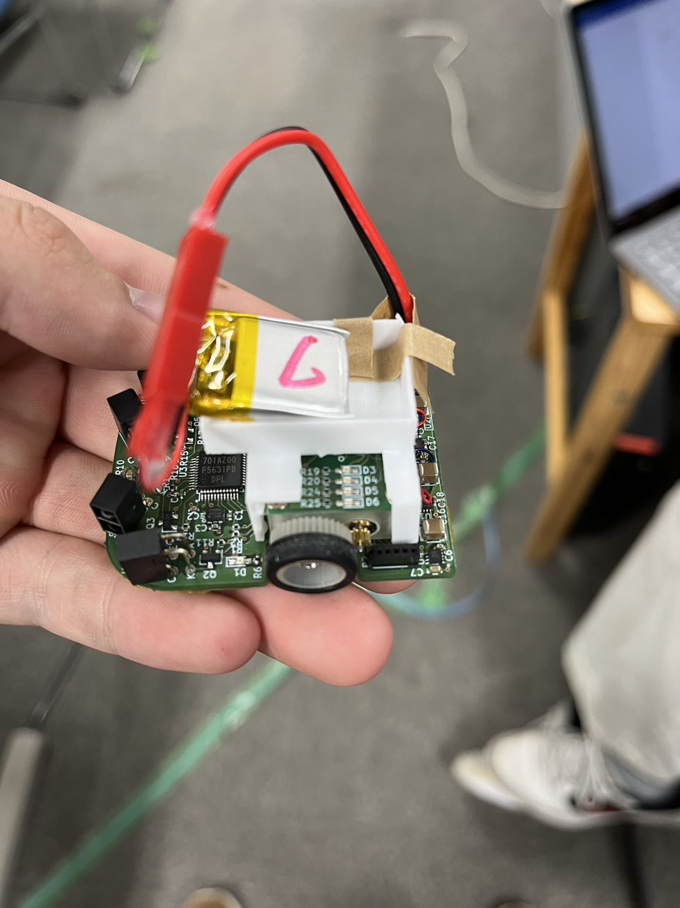
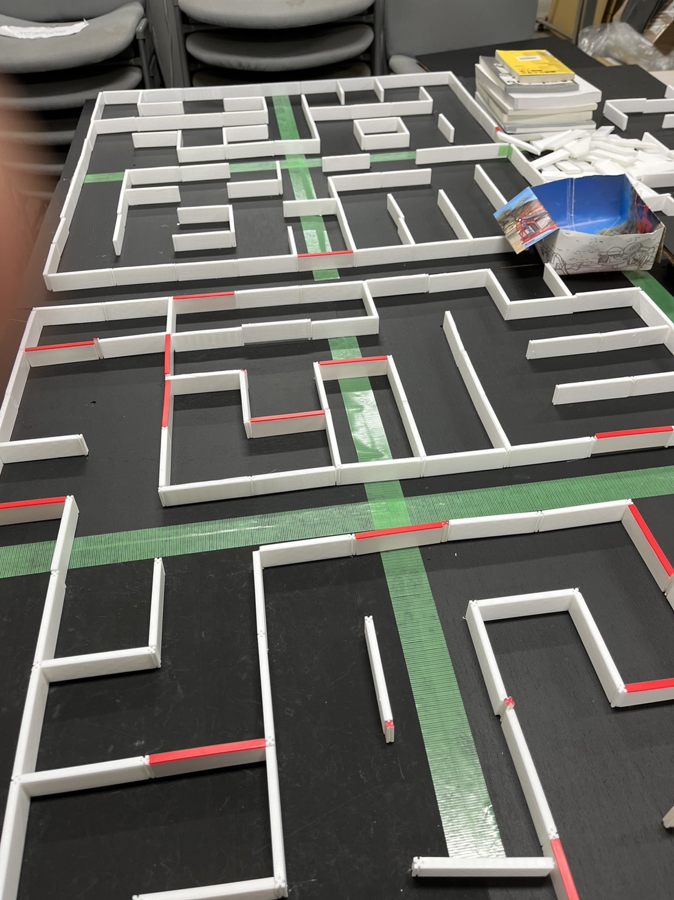

関西学院大学に入学された新入生の皆さん、ご入学おめでとうございます。
このサークルでは新一年生だけでなく新二、三年生の入部も受け付けております。
興味を少しでも持たれた方はぜひご連絡ください。 (→Contact)
関西学院大学ロボコンサークル~AiMEiBA~は2022年6月に誕生したばかりの新生ロボットサークルです。 メンバーは13人(2022/11/03当時)で、1年生から3年生まで在籍しています。 マイクロマウス完走・NHK学生ロボコン出場を目指して日々励んでいます。
参加者が自分たちで製作したロボットを使い、 さまざまな課題を達成するために参加者同士で競い合う大会の総称です。
マイクロマウスとはコンピュータを搭載し、
自律制御で未知の迷路を走破してゴールへ到達するまでの時間を競うロボット競技およびロボットの名称です。
弊サークルでは株式会社アールティ様から頂いた2台のロボットで大会に出場しています。


ロボワンでは主に二足歩行ロボットの作成をしています。 大会ではロボット同士で戦い、相手のロボットを倒した方が勝ちというルールです。 まだ大会には出場したことはありませんが、優勝目指して頑張っていきます！
人形ロボットを自分が動かしたい様に動かして、 戦わせることができる点です。 自分のロボットを自分で考えて強くしたり、 自由自在に動かせます。 ロボットと聞いたら大半の人が一番に人形ロボットを思い浮かべると思います。 なので、ロボット作ってる感が一番あって楽しいです。
もちろん意欲がある人に来てほしいですが、 大学の講義などを疎かにしないで取り組む人に入って来てほしいです。 また経験者も大歓迎ですが、未経験者でも歓迎しています。 今ロボワンに所属している人の中でも、このサークルで初めて経験している人もいます。気軽に見に来てください！！
新入生のみなさん、ロボワン一同加入を楽しみにしてます！！みんなで楽しみながら活動できることを願っています！